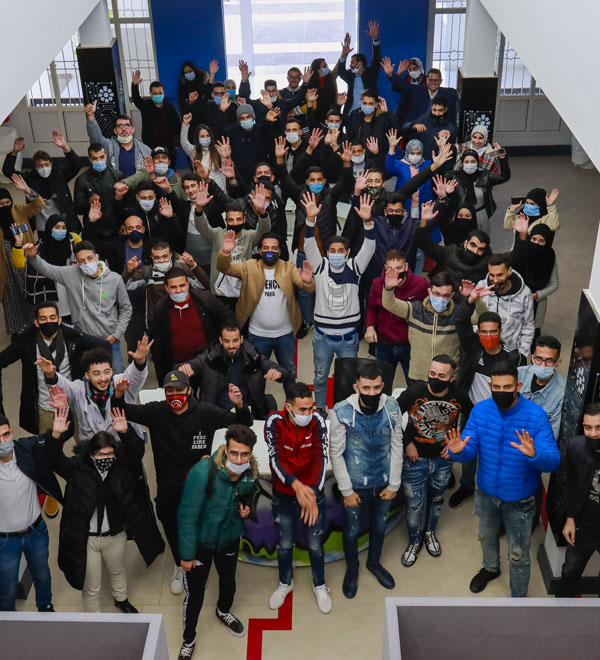
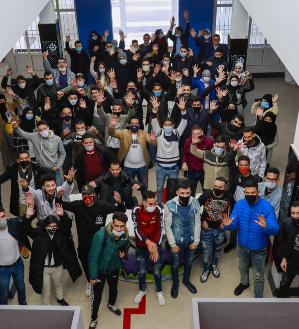
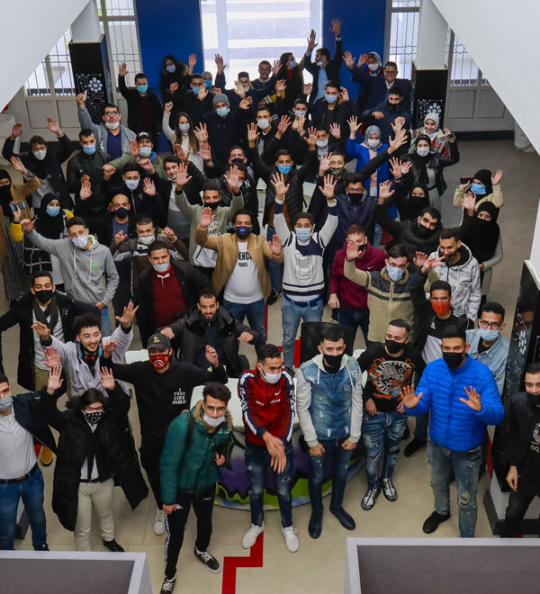

innovant
Passionné
Motivé

 

innovant
Passionné
Motivé

Quel que soit votre niveau d’étude, la passion pour la technologie et l’envie d’apprentissage sont les seuls critères pour nous rejoindre à Solicode.
Le centre Solicode est doté des moyens pédagogiques et techniques innovants favorisant l’apprentissage et la pratique des connaissances dans les meilleures conditions. La formation offerte à Solicode est axée sur les technologies digitales les plus demandées au marché du travail.
Solicode adopte une pédagogie active et par projets où l’apprenant se trouve dans des situations réelles ce qui garantit une insertion professionnelle. L’apprenant est accompagné par des formateurs référants experts durant toute la période de formation.
SOLICODE est un centre de formation solidaire et inclusif, ouvert aux jeunes motivés et intéressés par les métiers du Développement Web et Mobile. L’apprenant à SOLICODE se considère comme acteur principal tout au long de son processus d’apprentissage. C’est lui qui construit ses savoirs à travers la réalisation des projets, individuels ou par groupe, inspirés du milieu professionnel afin de favoriser une meilleure insertion au marché de travail. La formation au sein de SOLICODE est axée sur différents volets: technique, soft-skills, entreprenariat et gestion de projet. A l’issue de cette formation, les apprenants bénéficieront d’une double certification délivrée par SIMPLON et OFPPT.


Le développeur web réalise l’ensemble des fonctionnalités techniques d’une application web.
Le développeur mobile effectue la réalisation technique et le développement informatique d’applications mobiles.
Célébrer. Innover.
Collaborer.

Cette école a changé ma vie et ma façon de voir les choses. Il n'y a pas de mots pour décrire à quel point je suis reconnaissant et fier d'être un Solicoder. Merci ne sera jamais suffisant.

Solicode n'est pas juste une école, c'est une famille qui m'a aidé à découvrir mon potentiel et à croire en moi. Grâce à eux, j'ai transformé ma vie et mon avenir. Je serai éternellement reconnaissant de faire partie de cette communauté incroyable.

Les défis relevés et le soutien constant m’ont permis de découvrir des capacités insoupçonnées et de construire un avenir solide avec assurance. Cette expérience restera gravée comme un tournant majeur dans ma vie.